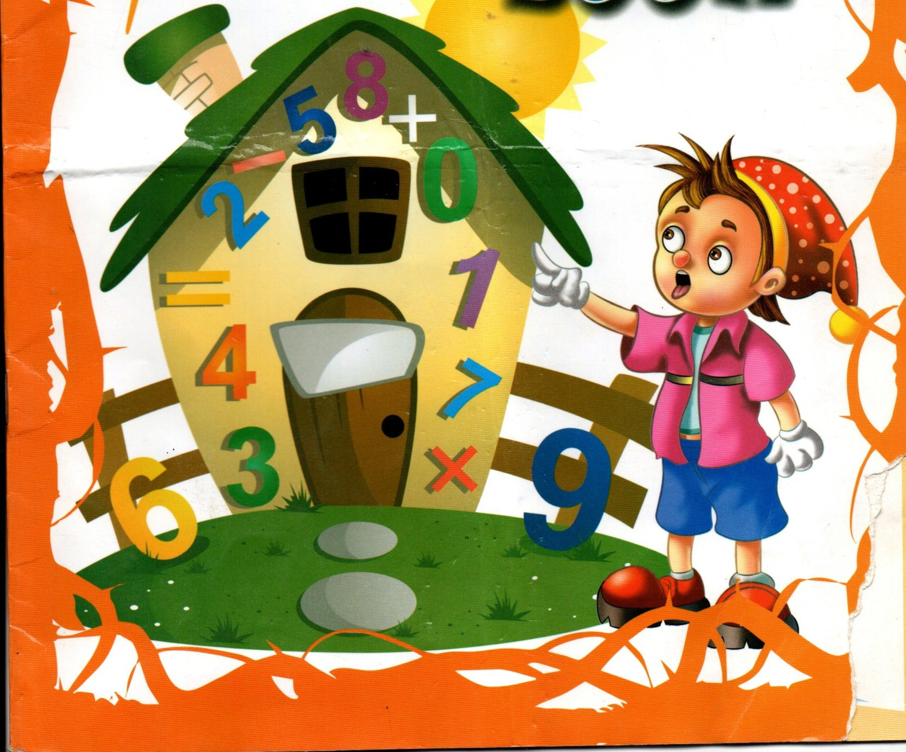

Overview
Purpose
To make an invitation to parents and their children regarding the importance of Maths and Science education for the elementary students. We will inform them of the available online education for their children that will also include fun activities, Math and Science clubs and devotionals to emphasize the importance of creating relationship with their Creator.Our slogan will be "Know & Love Maths!! Know & Love Science!! Know & Love God!!
There is lack of skilled educators to teach Science and Maths in our schools. Young people love going online for very good reasons of accessing information to inform and educate themselves. This online education will greatly help our youth to incoporate Math and Science into their daily activities
Audience
1. 5-7 graders within the age group of 11-13 years old
2. Secondary School students within the age group of 14-17 years old
Branding
Website Logo
Style Guide
Color Palette
Palette URL:
https://coolors.co/a1215b16-fe8989-4f38d1-c32b38| Primary | Secondary | Accent 1 | Accent 2 |
|---|---|---|---|
| #a1215b16 | #fe8989 | #4f38d1 | #c32b38 |
Typography
Heading Font: Averia Libre
Paragraph Font: Young Serif
About the website
The best website for online education for young learners in Tanzania, The Wonders of Maths & Science[WMSG] offers structured online education for the elementary with three pillars in mind; Love and know Maths!! Love and know Science!! Love and know God. It will target the young learners who are searching for wonders of Maths, Science and their Creator. It will be easily affordable for the majority of the population and its long term effect on the country's social-economy will be the marvelous work and a wonder.
Activities
The website will include various activities that will give students a safe environment to learn and interact with others with similar interests. National annual competition will be organized to create the spirit of hardworking and social interaction that will create a desire for massive participation of our youth.
Navigation
Site Map
Wireframes
Home